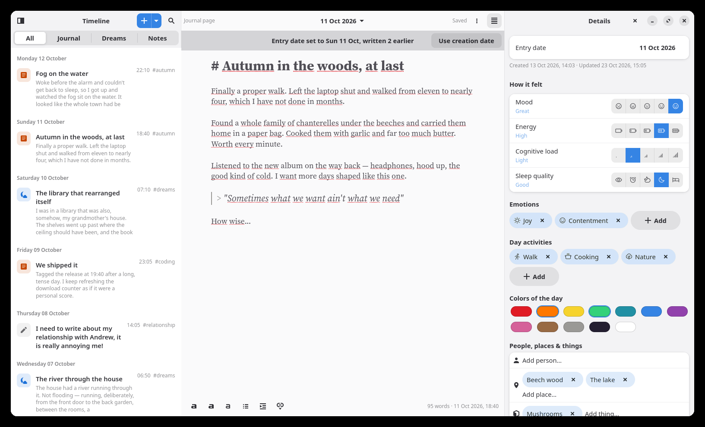

Quaderno is a journal for GNOME. Journal pages, dreams and quick notes live in one encrypted file on your computer.
The goal is a journal that stays private by default. Your writing stays yours: no account, no server, no network.
For people who want to keep a journal on their own computer.

Get Quaderno
Version 0.1.0 Free software under GPL-3.0-or-later
Flatpak, Debian, Ubuntu, Fedora and tarball.
Download Quaderno